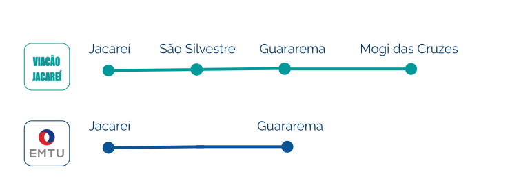

Linha Intermunicipais⚓︎
Aviso
Devido a Pandemia, existe uma mudança constante de horários e retirada de algumas linhas. Em sua grande maioria as linhas de ônibus estão reduzidas. Com isso em mente, é importante sempre averiguar se os horários não mudaram, antes de planejar pegar um ônibus.
Guararema → Mogi das Cruzes⚓︎

-
A linha de ônibus para Mogi das Cruzes é operada pela EMTU e pela Viação Jacareí, entretanto é gerenciada pela Viação Jacareí.
-
Os itinerários oficiais da Viação Jacareí estão listados em seu site e contém ônibus com ambas as bandeiras da EMTU e da Viação Jacareí.
-
Esse artigo não possuí vinculo com as empresas listadas mas se baseia nas informações disponibilizadas por elas em seus sites.
Tarifas⚓︎
Formas de Pagamento⚓︎
São aceitos:
- Dinheiro
- Cartão eletrônico ValeViaj1
Tarifas da Viação Jacareí⚓︎
As linhas da Viação Jacareí possuem o que é chamado de Linha com Seccionamento Tarifário, isso significa dizer que, são cobrados valores diferentes para cada "cidade" (secção) de parada disponível do percurso. Esse pontos são ilustrados abaixo, e começam em Jacareí terminando em Mogi das Cruzes. É importante notar que existem diversas paradas dentro dessas secções (pontos de ônibus), o leitor porderá descer em diversos dos pontos disponíveis dentro da mesma secção tarifária, entretanto terá de pagar o valor daquela secção.2

Abaixo são listados os valores tarifários atualizados em 31/05/2021
| Linha | Seção | Preço |
|---|---|---|
| 8015B | Jacareí a Guararema | R$ 5,45 |
| 8015B | Jacareí a Mogi das Cruzes | R$ 9,85 |
| 8015B | São Silvestre a Guararema | R$ 4,65 |
| 8015B | São Silvestre a Mogi das Cruzes | R$ 8,20 |
| 8015B | Guararema a Mogi das Cruzes | R$ 5,25 |
Horários⚓︎
Informação
Os dados apresentados abaixo foram atualizados em 31/05/2021. Para uma versão possívelmente mais atualizada consulte o PDF disponível no site da própria Viação, através deste link
Informação
Mostrar auxílio visual de horário disponível ? 3
Linha Viação Jacareí via Guararema⚓︎
Guararema → Mogi⚓︎
Estes são horários da Linha 8015B, o ônibus vai de Guararema para Mogi das Cruzes. Tendo antes passado em Jacareí. Os horários de passagem em guararema estão listados abaixo:
| Dia | via Guararema centro | via Freguesia |
|---|---|---|
| Seg. a Sex. | 06:05 07:50 09:20 10:40 12:20 13:50 15:20 16:50 18:20 19:45 21:45 23:30 | |
| Sábado | 06:15 08:05 09:15 10:40 12:15 13:45 15:15 16:45 18:15 19:45 21:45 23:30 | |
| Domingos e Feriados | 06:15 08:15 10:15 12:15 14:15 16:15 18:15 20:15 21:50 23:30 |
Guararema → Jacareí⚓︎
Estes são horários da Linha 8015B, o ônibus sai de Mogi das Cruzes e passam em Guararema nos horários listados abaixo, tendo como destino final Jacareí
| Dia | via Guararema centro | via Freguesia |
|---|---|---|
| Seg. a Sex. | 06:10 07:40 09:40 12:40 16:05 17:10 18:40 20:10 21:40 23:10 | *11:10 14:10 |
| Sábado | 05:50 07:40 09:40 12:40 15:40 17:10 18:40 20:10 21:50 23:10 | 11:10 14:10 |
| Domingos e Feriados | 05:50 08:15 10:15 14:15 18:15 20:15 21:50 | 12:15 16:15 |
Jacareí → Mogi das Cruzes⚓︎
Estes são horários da Linha 8015B, o ônibus sai de Jacareí com destino a Mogi das Cruzes. Os horários de saída de Jacareí estão listados abaixo:
| Dia | via Guararema centro | via Freguesia |
|---|---|---|
| Seg. a Sex. | 05:20 07:00 09:50 11:30 13:00 16:00 19:00 21:00 22:50 | 08:40 14:30 17:30 |
| Sábado | 05:2007:0009:5011:3013:0016:0019:0021:0022:50 | 08:30 14:30 17:30 |
| Domingos e Feriados | 05:30 07:30 09:30 13:30 17:30 19:30 21:10 22:50 | 11:30 15:30 |
Mogi para → Jacareí⚓︎
Estes são horários da Linha 8015B, o ônibus said de Mogi das Cruzes com destino a Jacareí, passando por Guararema (via Guararema) os horários de saída de Mogi das Cruzes estão listados abaixo:
| Dia | via Guararema centro | via Freguesia |
|---|---|---|
| Seg. a Sex. | 05:10 07:00 09:00 12:00 15:15 16:30 18:00 19:30 21:00 22:30 | 10:30 13:30 |
| Sábado | 05:10 07:00 09:00 12:00 15:00 16:30 18:00 19:30 21:00 22:30 | 10:30 13:30 |
| Domingos e Feriados | 05:10 07:30 09:30 13:30 17:30 19:30 21:10 22:40 | 11:30 15:30 |
Linha EMTU via Guararema⚓︎
Ainda não obtivemos informações sobre essa linha da EMTU, por enquanto, procure o Site da empresa ou o Google Maps
Identificando os Ônibus⚓︎
O destino final é localizado no letreiro frontal do veículo e logo abaixo há um segundo letreiro com identificação da tarifa e da Via.

Abaixo são relacionadas imagens ilustrativas de alguns dos veículos em uso:
| Bandeira | Veículo |
|---|---|
| Viação Jacareí | Foto por José Augusto de Souza Oliveira |
| EMTU | Foto por Viação Jacareí |
Nota
Essas imagens são ilustrativas, sempre se atente aos letreiros e marcações dos ônibus e em caso de dúvidas pergunte ao Motorista/Cobrador. As empresas de ônibus trabalham com variados modelos de carros, portanto inevitavelmente poderá haver variação de cor e modelo.
Onde Pegar os Ônibus ?⚓︎
Guararema⚓︎
Ponto da Praça Matriz⚓︎
Localizado entre a Igreja Matriz e o Restaurante Tradição (Mesma Calçada)
Ponto da Fabiana Flores⚓︎
Localizado em frente a floricultura Fabiana Flores (Mesma Calçada)
Ponto da Escola Roberto Feijó⚓︎
Localizado em frente a Escola Roberto Feijó
 Informações de Contato⚓︎
Informações de Contato⚓︎
Serviço de Atendimento ao Cliente (SAC) da Viação Jacareí e dados de contato:
| Local | Contato |
|---|---|
| SAC | 0800 701 05 01 |
| Site | https://www.viacaojacarei.com.br/ |
| Garagem | (12) 3931-3966 |
| Rodoviária de Guararema | 4693-7511 |
-
O ValeViaj é um cartão eletrônico próprio da Viação Jacareí e é utilizado nas catracas. Veja mais informações neste PDF da Viação ↩
-
Por exemplo, se o leitor for descer em São Silvestre pagará um pouco menos do que se for descer em Jacareí. Por isso é interessante se programar, a fim de pagar a tarifa necessária para cehgar no seu ponto. ↩
-
Quando ativo, as horas de ônibus serão comparadas com o horário atual e marcada em vermelho 01:00 quando indisponíveis e em verde 24:00, quando disponíveis. ↩